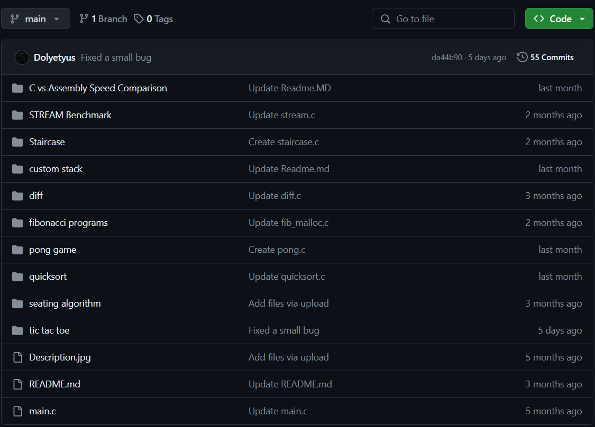

The Github Repo For My Open-source C Side Projects
Take a look at my Github repo to see my publicly available side projects written in C. This repo includes games, algorithms, data structures, and small projects.
 GitHub LinkIJVM Interpreter
Developed an enhanced interpreter for the IJVM (Integer Java Virtual Machine) instruction set architecture, written in C. This interpreter executes IJVM bytecode, allowing for the emulation of Java-like programs at the bytecode level. I also made a detailed terminal based debugger, inspired by the GNU debugger, to debug files with .ijvm extension. Some extra operations such as tail recursion handling is also implemented, as well as basic networking functions where I made use of C networking libraries to transfer information over the network between ijvm machine instances. With this project, I mastered parsing and executing bytecode instructions.
- Reach me for the source code and more details.
Custom UNIX Shell
Developed a Unix shell in C language using system calls to implement advanced features including pipes, redirections, detached commands, basic job control, and sequences. This project helped me to master low-level programming and system-level interaction, offering users a powerful and flexible command-line interface. By including essential Unix shell functionalities, this implementation demonstrates my both technical expertise and the ability to engineer complex software systems.
- Reach me for the source code and more details.
Custom System Memory Allocator
Implemented a custom system memory allocator in C using brk and sbrk. This allocator can replace the C library malloc, realloc, calloc and free functions. The allocator makes use of memory pages and keeps track of the memory blocks with the help of a linked list, as well as having a really small overhead per block. The implementation dynamically requests or gives back memory to the kernel and optimises locality in the memory.
- Reach me for the source code and more details.
Custom FAT File System
Developed a custom FAT file system using FUSE and C, delivering essential file operations including directory listing, directory creation, file reading, file deletion, file truncation, and file creation with writing capabilities. This project integrates user-level file system operations with the underlying filesystem infrastructure, offering a reliable and efficient solution for managing files and directories, which underscores a deep understanding of file system architecture and demonstrates the ability to create sophisticated software systems.
- Reach me for the source code and more details.
Server-Side Key-Value Store
Designed and implemented a high-performance, concurrent, in-memory key-value store in C, featuring a hash table for efficient data storage and mutexes and read-write locks for handling concurrent access. I created a thread pool for connection management and the system establishes communication between client and server via TCP sockets, enabling seamless interaction with the key-value store. The server processes client requests for modifying items in the store, supporting operations such as deletion (DEL), retrieval (GET), and insertion (SET), while ensuring data integrity and thread safety through robust concurrency control mechanisms.
- Reach me for the source code and more details.